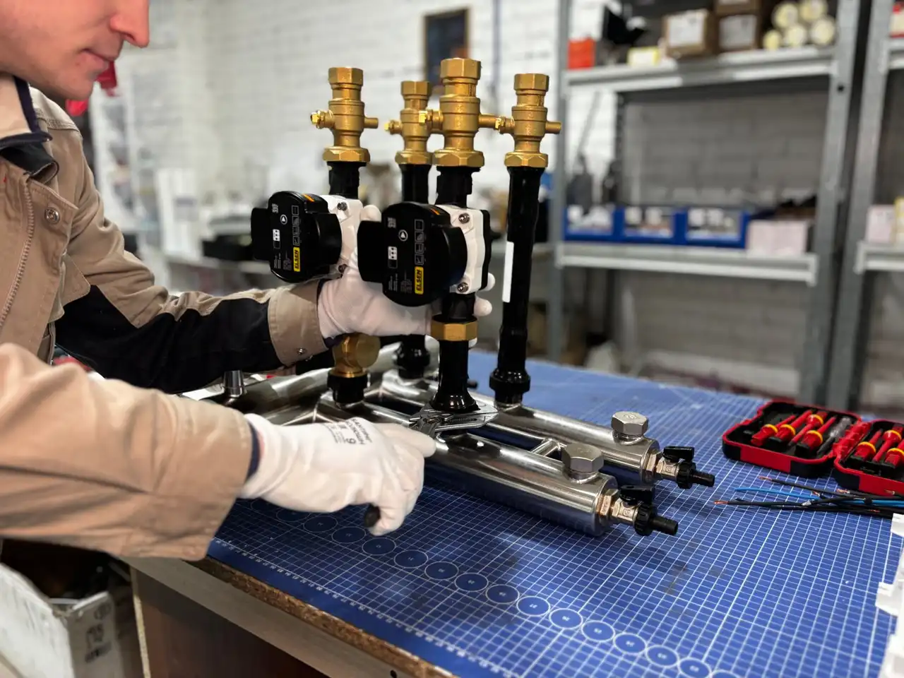
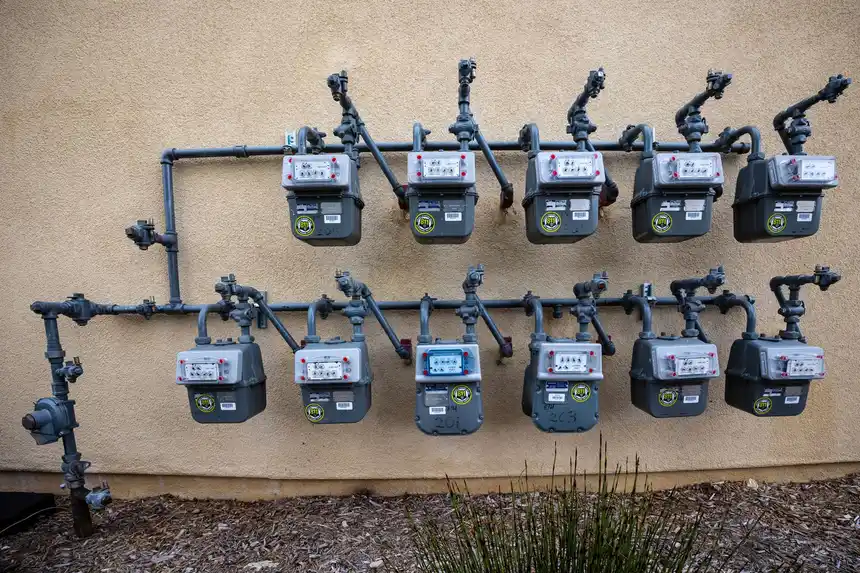

For homes
We run gas lines for ranges, dryers, water heaters and fireplaces in houses, condos and townhomes. We check the load and test the line before we leave.
- New range or dryer line
- Gas leak near water heater
- Old pipe replacement
When you need gas line services Arlington Heights IL homeowners can count on, we run new gas pipe installation Arlington Heights properties require and repair leaks before they become emergencies. From a new stove hookup at 60004 to a full line replacement in Scarsdale, our crew handles permits, pressure testing and code compliance. We work on copper, PEX and black steel, and we test every connection before we leave.

Leak checkPressure testPermit pulledEvery gas line job starts with a full inspection and ends with a pressure test. The scope depends on whether you need a new run, a repair or a replacement, but the core steps are the same. Here is what is covered and what we handle as an add-on.

We check the meter, the appliance connection and every visible joint between them. We look for corrosion, kinks, undersized pipe and missing shut-off valves. If the run is behind a wall, we use a combustible gas detector to check for leaks at the openings. You get a plain-English report of what we found.
For new installations and replacements, we pull the Arlington Heights permit and schedule the Cook County inspection. We meet the inspector on site and correct anything they flag. You do not have to call the village or take a day off work to let the inspector in.
We install copper pipe, black steel or PEX tubing depending on the appliance load and the route. Repairs involve cutting out the failed section, fitting a new piece and soldering or crimping it in place. We use a pipe cutter and a soldering torch or PEX crimping tool, and we keep the work area clean.
After the work is done, we pressurize the line to 10 PSI and hold it for 15 minutes. If the gauge moves, we find the leak and redo the joint. We also check each connection with leak detection equipment. You watch the gauge hold before we leave.
We connect the appliance, install a shut-off valve at the connection point, and relight the pilot if needed. We check the flame color and height and confirm the appliance runs correctly. If it does not, we troubleshoot the appliance side before we call the job done.
We lay drop cloths, vacuum metal shavings and wipe down surfaces. Then we walk you through what we did, where the shut-off valve is, and what to watch for over the next week. You get a photo of the valve location and the pressure-test record.
The approach is the same for a home and a business. What changes is the access, the schedule and who needs the paperwork.

We run gas lines for ranges, dryers, water heaters and fireplaces in houses, condos and townhomes. We check the load and test the line before we leave.
We run gas lines for restaurants, laundromats and shops in commercial buildings. We calculate the load, pull the permit and schedule the inspection around your hours.
A plain-language look at what Gas Line Services involves and when it is needed.
See how it worksThat covers a new gas pipe installation Arlington Heights homeowners need for a range, dryer or outdoor grill, a gas line repair Arlington Heights, Illinois properties require after a leak, and full replacement of corroded or undersized piping. We pressure-test every run with a gauge, check each joint with leak detection equipment, and confirm the appliance fires correctly before we sign off.
Most calls we get in Arlington Heights start the same way: a homeowner smells gas near the water heater, a new range sits in the kitchen with no line behind it, or a 1950s ranch off Miner Street Corridor still has the original black steel pipe feeding a furnace. Cook County winters push furnaces hard from November through March, and that demand exposes weak joints and undersized runs. If you are searching for gas line services near me Arlington Heights IL, we can usually be on site the same day.
A gas line is only as good as its pressure test and its permit.

From the first phone call to the final pressure test, here is exactly what happens when you book gas line services Arlington Heights IL with our crew. No mystery, no waiting around for a callback that never comes.
You call (224) 643-9856 and describe what you smell, see or need installed. If it is an active leak, we tell you to leave the house and call the gas utility first, then we dispatch. For non-emergency work, we book a two-hour arrival window, usually same-day or next morning. You get a text when the tech is en route.

The tech walks the meter, the appliance and the run between them. We check for corrosion, kinks, undersized pipe and missing shut-off valves. On a replacement, we camera the wall cavity if accessible. This takes 20 to 30 minutes and ends with a plain-English explanation of what we found and what it takes to fix it.

For new installations and replacements, we pull the Arlington Heights permit and schedule the Cook County inspection. You get a written scope the same day: pipe material, route, appliance load, shut-off locations and the inspection window. No work starts until you approve it.

Most repairs finish in two to four hours. A full replacement or new run takes four to eight hours depending on length and wall access. We cut, fit, solder or crimp, then pressurize the line to 10 PSI and hold it for 15 minutes. If the gauge moves, we find the leak and redo the joint before moving on.

We relight pilots, confirm the appliance fires, and check the flame color and height. You get a pressure-test record, a photo of the shut-off valve location, and a walkthrough. If the inspector is scheduled, we meet them on site.

Move across a circle, or focus it and press Enter, for an illustrative thermal view of the photograph.

Handheld detector that sniffs for gas at joints, valves and appliance connections. We use it to confirm a leak before we open a wall and to verify the repair after we finish.

We pressurize the line to 10 PSI and hold it for 15 minutes. The gauge tells us whether the run is tight. If it moves, we know there is a leak and we find it before we leave.

Clean, square cuts on copper pipe and black steel. A square cut means a better solder joint or crimp, which means fewer leaks down the road. We do not use a saw where a cutter will do.

We solder copper joints and crimp PEX connections. Both methods are code-approved when done correctly. The choice depends on the route, the wall access and the appliance load.

Beyond the gas detector, we use soap solution and pressure-drop testing to confirm every joint. We check each connection individually, not just the line as a whole.
Thermal views are illustrative, generated from the photographs.
Pipe wrenches, tubing cutters and cordless tools from RIDGID and Milwaukee. We keep them on the truck so we are not making a supply run in the middle of your job.
We isolate the new or repaired section, pressurize it to 10 PSI and hold for 15 minutes. The gauge must not move. This is the same standard the inspector uses, so we know the line will pass before we call for inspection.
Every appliance has a BTU rating. We add up the load and size the pipe so the appliance gets steady pressure at the connection. Undersized pipe is one of the most common problems we find on older Arlington Heights homes.
After the pressure test, we check each joint with a combustible gas detector and soap solution. We do not rely on a single test at the meter. If one joint fails, we redo it and re-test the whole run.
We pull the Arlington Heights permit, schedule the Cook County inspection and meet the inspector on site. If they flag something, we correct it and re-test. You do not have to manage the paperwork.
We relight pilots, confirm the appliance fires and check the flame color and height. A blue flame with a steady height means the gas pressure is correct. A yellow or lazy flame means we need to adjust the air mixture or check the line size.

You bought a new gas range and need a line run from the basement to the kitchen.
We run copper pipe or PEX tubing from the nearest existing gas run to the range location, install a shut-off valve and connect the appliance. We pull the permit and pressure-test the line. The work usually takes four to six hours.
Outcome: You cook on gas the same day. The line passes inspection and the shut-off valve is accessible behind the range.

You smell gas near the water heater on a cold January morning.
We dispatch a tech with a combustible gas detector and pressure gauge. We isolate the leak, repair the failed joint or section, and re-test the entire run. If the water heater itself is the source, we repair or replace the gas valve or thermocouple.
Outcome: The leak is sealed, the line holds pressure and the water heater fires clean. You get a written pressure-test record.

Your 1960s ranch in Pioneer Park still has the original black steel gas pipe feeding the furnace and water heater.
We replace the run with correctly sized copper pipe or PEX tubing, upsize if the load requires it, and install new shut-off valves at each appliance. We pull the permit and meet the inspector.
Outcome: Both appliances get steady gas pressure, the flames burn blue and the system passes inspection. You avoid a mid-winter failure.

You are adding a gas fireplace or a pool heater and need a new line run.
We calculate the BTU load, choose the pipe size and material, and run the line from the meter to the appliance. We install a shut-off valve and pressure-test the run. Outdoor runs get pipe rated for exterior exposure.
Outcome: The fireplace or pool heater fires correctly and the line holds pressure. The permit and inspection are handled.

You are remodeling the kitchen and want the gas line moved behind the new island.
We reroute the existing line, extend it to the new location and install a shut-off valve. We coordinate with your contractor on wall openings and timing so the drywall goes back once.
Outcome: The range sits where you want it, the line is code-correct and the inspection passes. No second round of demolition.

Arlington Heights has a mix of housing stock that affects gas line work. Downtown and Old Arlington Heights have older homes with original black steel pipe, often undersized for modern appliances. Scarsdale and Sherwood have 1960s and 1970s ranches where the gas line runs through the basement ceiling and is easy to access.
Newer construction near Arlington Market and Creekside often has PEX tubing already in place, which makes adding a line simpler. Cook County winters push furnaces and water heaters hard from November through March, and that is when we see the most gas line leak repair Arlington Heights IL calls. The ground freezes to 30 inches or more, so exterior runs need to be buried below the frost line.
If you need affordable gas pipe repair in Arlington Heights, Illinois, we can usually be on site the same day.

Before: A homeowner in Scarsdale smelled gas near the water heater. The fitting at the tank connection had cracked from years of heat cycling. The line failed a pressure test and the water heater would not stay lit.
After: We replaced the cracked fitting, added a new shut-off valve and pressure-tested the run to 10 PSI for 15 minutes. The gauge held. The water heater fired clean and the gas smell was gone. Total time on site: two hours.
Check the connection at the water heater once a year for corrosion or soot. If you smell gas, leave the house and call the utility before calling us.
Before: A homeowner in Downtown Arlington Heights bought a new gas range but the kitchen had no gas line. The nearest run was in the basement, 25 feet away through a finished ceiling. They were using a propane tank temporarily.
After: We ran 25 feet of copper pipe from the basement run to the range location, installed a shut-off valve and connected the appliance. The permit was pulled and the inspection passed on the first visit. Total time: six hours.
Keep the shut-off valve accessible behind the range. If you remodel the kitchen, call us before you close the wall so we can inspect the line.
Before: A 1965 ranch in Pioneer Park had original black steel pipe feeding a furnace and water heater. The pipe was undersized for the new tankless water heater the homeowner wanted. The old line also had surface corrosion at two joints.
After: We replaced the run from the meter with correctly sized copper pipe, installed new shut-off valves at both appliances and pressure-tested the system. The tankless heater fired correctly and the furnace flame was steady blue. Total time: one day.
Have the gas line inspected every two to three years, especially if you add a new appliance. Keep the area around the meter clear of storage.
Gas problems do not fix themselves, and they do not get cheaper with time. Here are the calls we run most often and what happens if you let them sit.
A code-correct gas line that passes inspection and holds pressure.
We pull the permit, schedule the inspection and correct anything the inspector flags at no extra charge. That matters when you sell the house and the buyer's inspector asks for paperwork on the gas line for new stove Arlington Heights 60004 installation you had done three years ago.
We use leak detection equipment and a pressure gauge to isolate the exact joint or section that is failing, instead of tearing into walls hoping to find it. A typical gas line leak repair Arlington Heights IL call takes 90 minutes to two hours from arrival to a confirmed, sealed fix. You get a written pressure-test result before we pack up.
A dryer needs a different BTU capacity than a tankless water heater. We calculate load, then choose between copper pipe, PEX tubing or black steel so the appliance gets steady pressure. Undersized gas piping Arlington Heights homes often have causes weak flames, long ignition times and premature failure on Rheem and AO Smith units.
We lay drop cloths, cut with a pipe cutter instead of a saw where possible, and vacuum metal shavings before we leave. Shut-off valves go in at the appliance so you can isolate it without killing gas to the whole house. You get a walkthrough of what we did, what we tested and what to watch for over the next week.
Clear records you can keep and share.
Gauge reading and hold time recorded
Picture of shut-off valve location
Pipe size, route and materials listed
Signed inspection record when required
Most gas calls fall into three categories. Knowing which one you need helps you ask the right questions.
Fixing a failed joint or short section
Swapping the full run from the meter
Adding a line for a new appliance
A list like this tells people straight away whether you cover their street. Not listed? Call and ask: it only takes a minute.
Based in Arlington Heights and covering the places around it. Pick one for local details.
The price depends on run length, wall access, pipe material and whether a permit is required. A short run to a dryer in an open basement sits at the low end. A long run through finished walls to a kitchen island sits at the high end. We quote flat before we start.
Handymen and general contractors cannot pull the gas permit.
A typical replacement takes four to eight hours of on-site work, plus the inspection window. If the old line runs through finished walls, we may need a second day to open and patch. Most homeowners have gas back on the same day we start. We pressure-test at the end and relight every pilot before we leave.
Yes. Arlington Heights requires a permit for new gas lines, replacements and any work that alters the run from the meter. Minor repairs to an existing joint sometimes qualify as service work, but we pull the permit when the scope requires it. We handle the paperwork and the inspection so you are not chasing the village hall.
Other services from the same team.
We pull the permit, pressure-test the line and meet the inspector. Same-day service available across Arlington Heights and Cook County.
Call (224) 643-9856 or email us and we will get back to you fast. Tell us what is going on and we will tell you what it takes to fix it.